ERRO UNC: O que fazer se ocorrer mensagem
de erro "Compartilhamento de rede UNC" ?
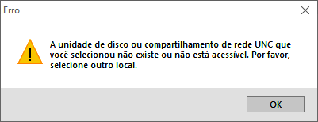
Este erro compartilhamento de rede UNC pode
ocorrer por algumas razões como: compartilhamento /
mapeamento errado da pasta ou o usuário não possui senha
para acessar arquivos ou pastas compartilhadas.
Solução: Verifique se o
Compartilhamento protegido por senha está
ativo.
PROCEDIMENTOS SERVIDOR/ATALHO:
1- DESABILITAR ANTI VIRUS, FIREWALL E WINDOWS DEFENDER;
2- NA PASTA DO SISTEMA VOCÊ DEVE COMPARTILHAR O PONTO EM
REDE;
3- VÁ EM:
PAINEL DE CONTROLE / CENTRAL DE REDE E COMPARTILHAMENTO /
ALTERAR AS CONFIGURAÇÕES DE COMPARTILHAMENTO
AVANÇADAS;
4- DESCOBERTA DE REDE E DESABILITAR COMPARTILHAMENTO
PROTEGIDO POR SENHA.
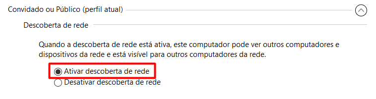
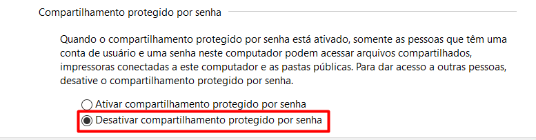
ERRO COLETA NÃO FUNCIONA: O que fazer se
ocorrer mensagem de erro
"Coleta automática não funciona" ?
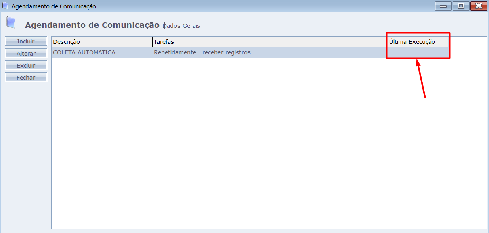
Este erro
Coleta automática não funciona pode ocorrer
quando o Agente de Comunicação não está executável.
Solução: faça o passo a passo abaixo:
PROCEDIMENTOS:
1- COM O SISTEMA ABERTO, VÁ EM
MANUTENÇÃO > EQUIPAMENTOS > AGENDAR COMUNICAÇÃO, E APAGUE A COLETA E FECHE O SISTEMA;
2- ACESSE A PASTA DO PONTO, LOCALIZE E EXECUTE O
REMGER.EXE COMO
ADMINISTRADOR;
3- VEJA SE TEM O ARQUIVO LOG-ERROS.TXT, SE
TIVER, APAGUE ESSE ARQUIVO;
4- LOCALIZE E EXECUTE O EXATP4.EXE COMO
ADMINISTRADOR;
5- LOCALIZE O ARQUIVO PONTO4DLL.DLL, SEGURE
A TECLA SHIFT E CLIQUE COM O BOTÃO DIREITO
DO MOUSE, SELECIONE A OPÇÃO
COPIAR COMO CAMINHO OU
COPY AS PATH CASO ESTEJA EM INGLÊS;
6- ABRA O CMD COMO
ADMINISTRADOR E ESCREVA
regsvr32 E DEPOIS COLE O CAMINHO DO ARQUIVO
PONTO4DLL.DLL;
7- AINDA NA PASTA DO PONTO LOCALIZE E EXECUTE
INSTGER.EXE COMO
ADMINISTRADOR;
8- INICIE O GERENCIADOR DE TAREFAS DO SISTEMA E OLHE NA
PASTA SE VOLTOU A GERAR O ARQUIVO
LOG-ERROS.TXT;
9- ABRA O SISTEMA E CRIE NOVAMENTE UMA COLETA AUTOMÁTICA.
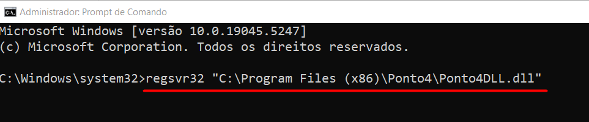
ERRO 183: O que fazer se ocorrer mensagem
de erro "código 183" ?
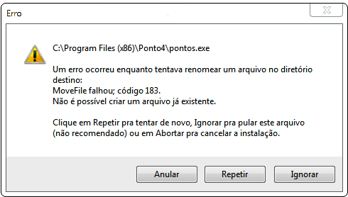
Este erro Código 183 ocorre quando é feito
a tentativa de atualização do sistema no servidor, e o Ponto
está sendo utilizado por outra aplicação ou por outro
usuário da rede.
Solução: faça o passo a passo abaixo:
PROCEDIMENTOS:
1- NO MENU INICIAR PESQUISE POR
GERENCIMENO DO COMPUTADOR;
2- VÁ EM PASTAS COMPARTILHADAS > SESSÕES E
CLIQUE COM O BOTÃO DIREITO DO MOUSE E CLIQUE EM FECHAR TODAS
AS SESSÕES.
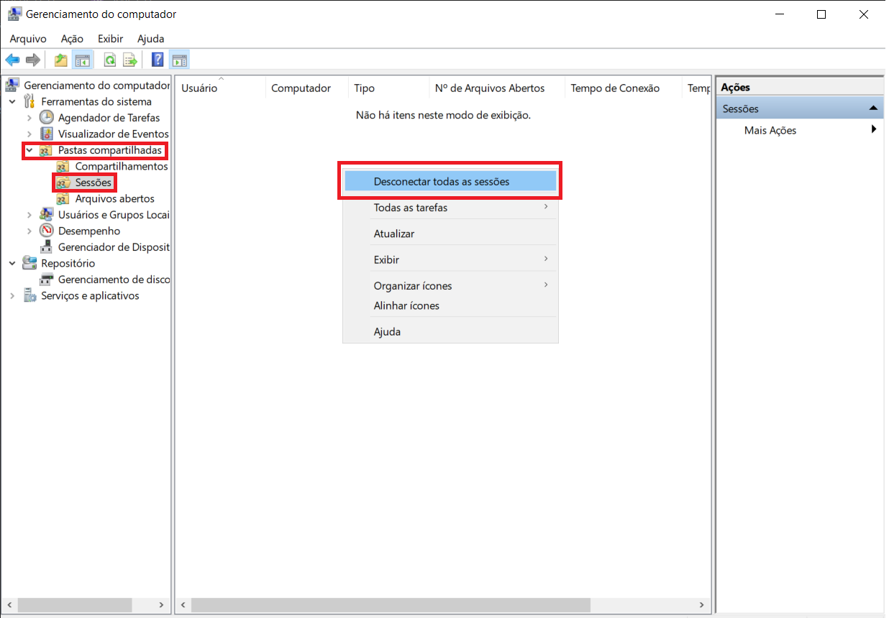
INSTALAR MAIS DE UM GERENCIADOR DE TAREFAS
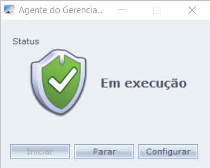
Solução: faça o passo a passo abaixo:
1- BAIXE O INSTALADOR AlterarInstancia.exe
;
2- COLOQUE O AlterarInstancia.exe NA PASTA
DO SISTEMA;
3- EXECUTE O AlterarInstancia.exe COMO
ADMINISTRADOR;
4- PREENCHA COM O BANCO DE DADOS E DEPOIS CLIQUE NO BOTÃO
ALTERAR;
5- PREENCHER O NOME DO SERVIÇO E CONCLUIR.
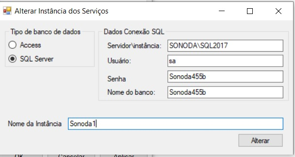
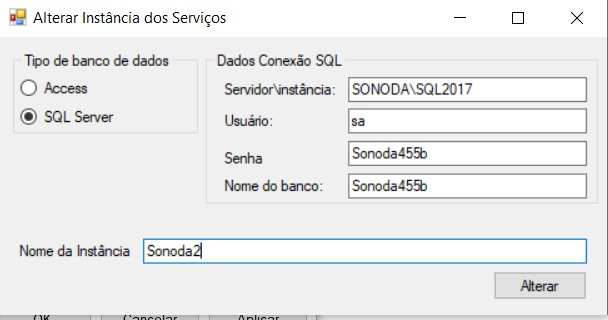
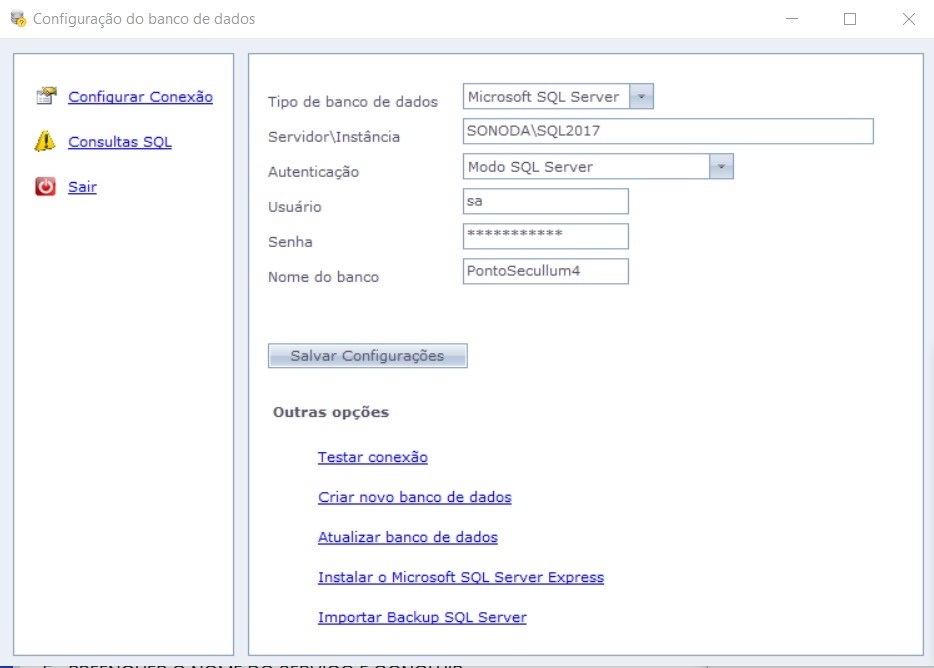
ERRO 482: O que fazer se ocorrer mensagem de erro "Run-time error: 482: Printer error" ?
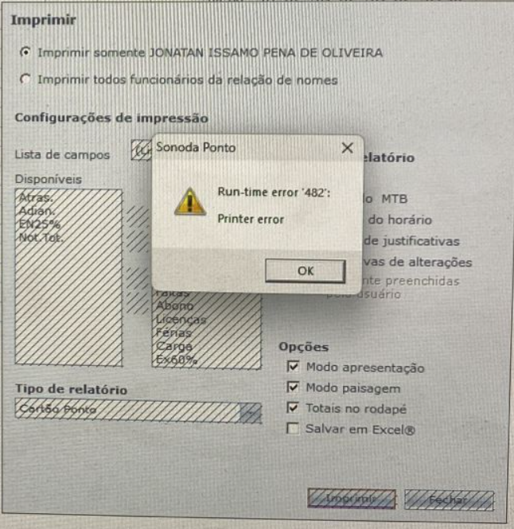
Solução: faça o passo a passo abaixo:
1- APERTE O BOTÃO DO WINDOWS E PESQUISE PAINEL DE CONTROLE > PROGRAMAS E RECURSOS
2- VÁ EM ATIVAR OU DESATIVAR RECURSOS DO WINDOWS
3- CLIQUE NA CAIXINHA E ATIVE O IMPRESSÃO DA MICROSOFT EM PDF
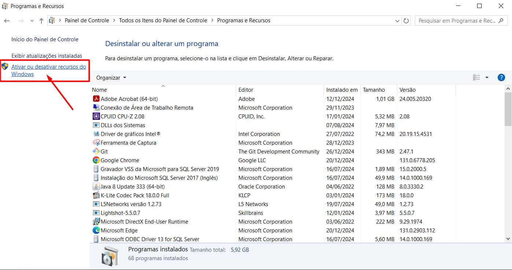
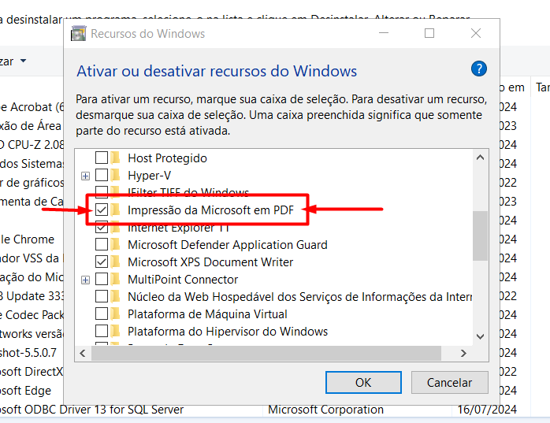
ERRO 52: O que fazer se ocorrer mensagem de
erro "52: bad file name or number"?
A mensagem Bad file name or number ocorre
quando não há permissão para acesso completo de um usuário a
um determinado arquivo (normalmente o banco de dados).
Solução: Certifique-se de que as permissões
de leitura e escrita estão corretas para o arquivo de dados
do sistema.
1- GERALMENTE ESTÁ EM
C:\Program Files\Microsoft SQL
Server\MSSQL14.SQL2017\MSSQL\Backup
2- VERIFICAR SE O LOCAL ONDE É GERADO O BACKUP ESTÁ CORRETO
3- INSERIR PERMISSÃO NA PASTA DA INSTÂNCIA DO BANCO DE DADOS
TICKET PENDENTE
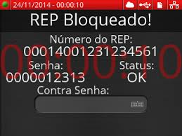
A mensagem Ticket Pendente ocorre quando
tem algum papel enroscado na impressora do relógio.
Solução: Certifique-se que a bobina esteja
colocada de forma correta e se não tem nenhum papel
enroscado na impressora.
1- FAZER O DOWNLOAD DO PROGRAMA
repidclass_config.exe
2- EXECUTAR O ARQUIVO
repidclass_config.exe PELO CMD NA PASTA DO
ARQUIVO ONDE FOI BAIXADO
3- APERTAR O BOTÃO TAB ATÉ APARECER O
ARQUIVO BAIXADO
4- APÓS ENCONTRAR O ARQUIVO, DIGITE NA FRENTE DO NOME DO
ARQUIVO /dev E APERTE A TECLA
ENTER
5- COLOQUE O
IP DO RELÓGIO > LER CONFIGURAÇÕES > SEM SENSOR, QUANDO APARECER SENSOR 0 REINICIE O
RELÓGIO DE PONTO.
 SONODA HELP
SONODA HELP